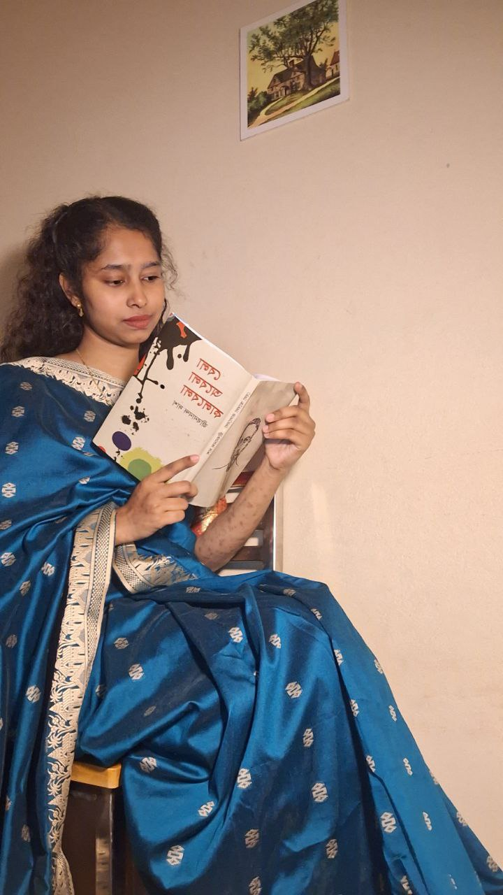
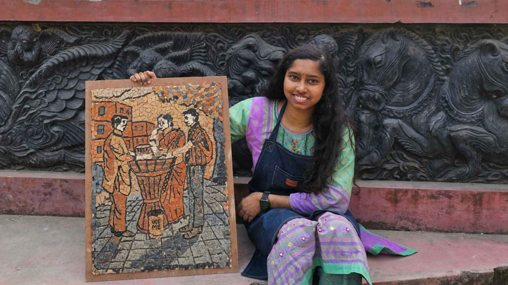
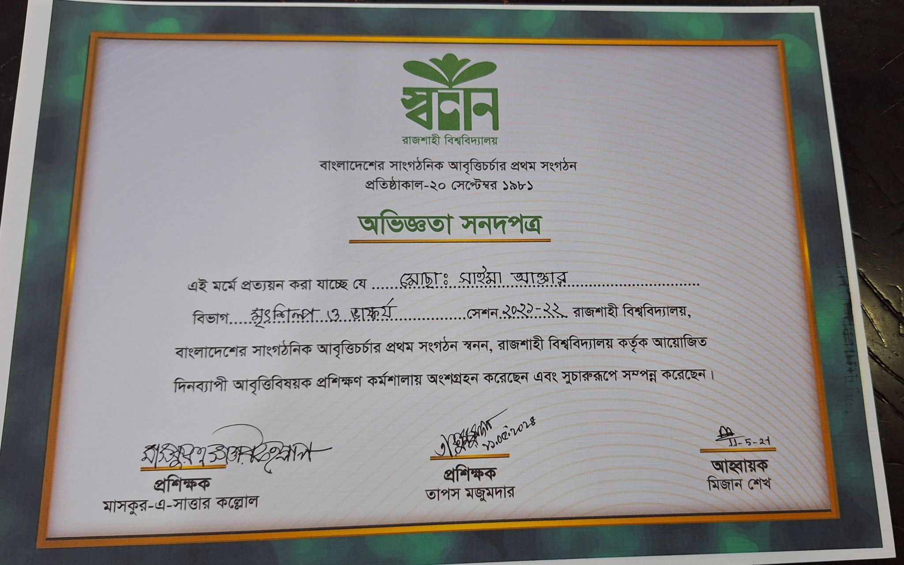

শুভেচ্ছা! আমি সাইমা বিভা। পেশায় একজন ভয়েস আর্টিস্ট, আর শখের বশে লেখক, পড়াশোনায় মৃৎশিল্পী। যান্ত্রিক এই নগরে মানুষের আবেগ যখন ক্রমশ যান্ত্রিকতায় রূপ নিচ্ছে, আমি চেষ্টা করি মেধা আর মনন দিয়ে আগলে রাখতে আমাদের সংস্কৃতি।
একই হাতে কখনো কাদামাটি দিয়ে গড়ি দৃশ্যমান অবয়ব, আবার কখনো শব্দের বুননে আঁকি অদৃশ্য ছবি। বিভার বহুমাত্রিক ভুবনে আপনাকে স্বাগতম।

সিরাজগঞ্জের মেয়ে সাইমা বিভা। রাজশাহী বিশ্ববিদ্যালয়ের চারুকলা অনুষদে 'মৃৎশিল্প ও ভাস্কর্য' বিভাগে অধ্যয়নরত। পড়াশোনা শিল্পের ভুবনে হলেও, পেশাগত জীবনে আমি নিজেকে মেলে ধরেছি একজন ভয়েস আর্টিস্ট হিসেবে।
বর্তমানে আপডেট টিভি-তে নিউজ কন্টেন্টে নিয়মিত কণ্ঠ দিচ্ছি। এছাড়া বিভিন্ন কর্পোরেট প্রতিষ্ঠানের কলার টিউন, ওভিসি এবং বিজ্ঞাপনে কাজ করার অভিজ্ঞতা রয়েছে।
কণ্ঠ দেওয়ার পাশাপাশি আমি লেখালেখি এবং মৃৎশিল্পের সাথেও যুক্ত। তবে মাইক্রোফোনের সামনেই আমি সবচেয়ে বেশি স্বাচ্ছন্দ্যবোধ করি। প্রমিত উচ্চারণ এবং বাচনভঙ্গি আমার কাজের প্রধান শক্তি।
কাজের ফাঁকে যখন সময় পাই, তখন কলম হাতে ফিচার লিখি অথবা ক্যানভাস রাঙাই। সাংগঠনিক নেতৃত্ব দিতেও ভালোবাসি, কাজ করছি 'বাংলাদেশ তরুণ কলাম লেখক ফোরাম'-এর সাথে।
ভয়েস আর্টিস্ট (নিউজ কন্টেন্ট)
বিভিন্ন কর্পোরেট ক্লায়েন্ট
ফ্রিল্যান্স ভয়েস আর্টিস্ট
রিয়েল-টাইম অডিও প্লেয়ার
আপডেট টিভি
শিক্ষা প্রতিষ্ঠান
ওয়েলকাম মেসেজ
বসন্ত নয়, অবহেলা
মাইক্রোফোনের বাইরে আমার পৃথিবী
কাদামাটি দিয়ে দৃশ্যমান অবয়ব গড়া এবং ক্যানভাস রাঙানো।
শব্দের বুননে গল্প বলা। সমসাময়িক বিষয় নিয়ে জাতীয় দৈনিক পত্রিকায় নিয়মিত ফিচার ও কলাম লিখি।
বাংলাদেশ তরুণ কলাম লেখক ফোরামের সাথে যুক্ত থেকে তরুণ লেখকদের উন্নয়নে কাজ করছি।
কাজের ফাঁকে কিছু মুহূর্ত

কাজের স্বীকৃতি স্বরূপ কিছু অর্জন
বাংলাদেশ তরুণ কলাম লেখক ফোরাম
জুলাই স্মারক গ্রন্থমেলা ২০২৫

স্বনন
ক্লায়েন্টরা যা বলেন
"দৈনিক আলোকিত সকালের মাল্টিমিডিয়া বিভাগে প্রদায়ক হিসেবে সাইমা বিভার কাজ অত্যন্ত প্রশংসনীয়। বিশেষ করে নিউজ কন্টেন্ট ও ভিডিও নির্মাণে তার কণ্ঠস্বর এবং উপস্থাপনা ছিল অত্যন্ত সাবলীল। ভয়েস-ওভার এবং ভিডিও মেকিংয়ে তার পেশাদারিত্ব আমাদের ডিজিটাল প্ল্যাটফর্মকে সমৃদ্ধ করেছে।"
বার্তা সম্পাদক
দৈনিক আলোকিত সকাল
"সাইমা বিভা একজন বহুমুখী প্রতিভার অধিকারী। ভয়েস আর্টিস্ট হিসেবে তার কণ্ঠের আবেগ, স্পষ্টতা এবং গভীরতা যেকোনো কাজকে জীবন্ত করে তোলে। মাল্টিমিডিয়া কন্টেন্ট ক্রিয়েশনে তার দক্ষতা, ডেডিকেশন এবং স্টোরিটেলিং সক্ষমতা সত্যিই প্রশংসনীয়। তার মধ্যে পেশাদারিত্ব এবং শৈল্পিক সত্তার এক অপূর্ব সংমিশ্রণ রয়েছে।"
ফিচার রাইটার